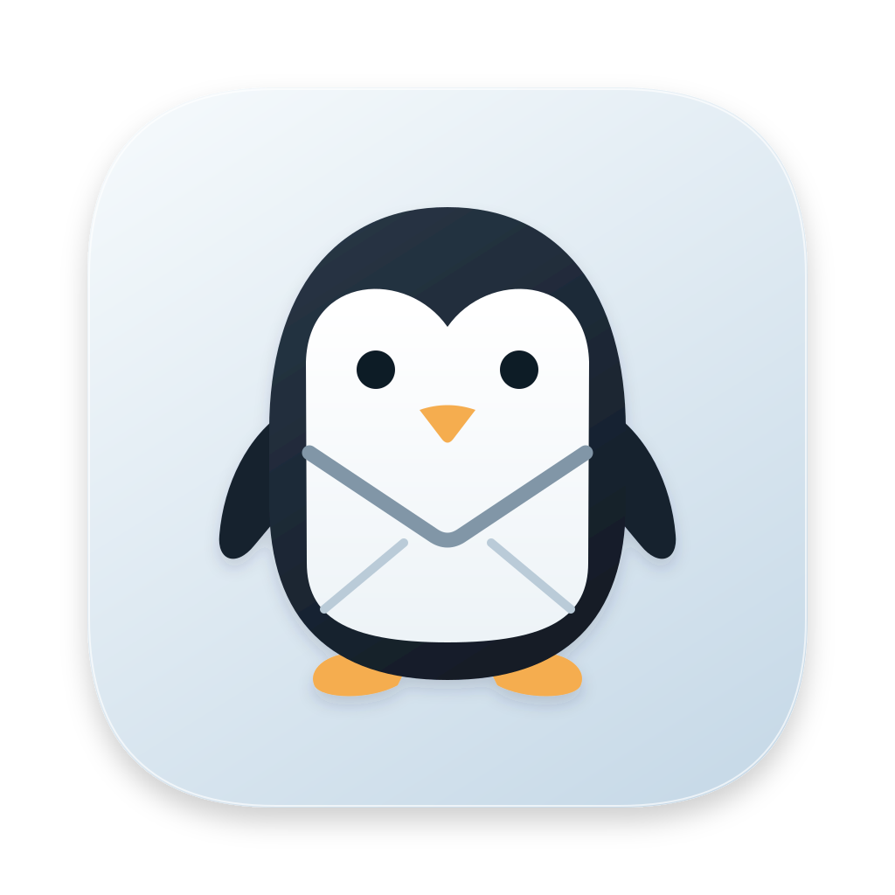
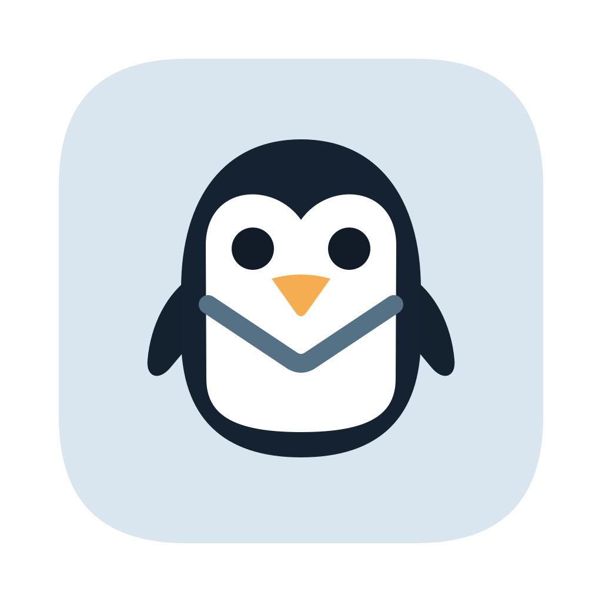
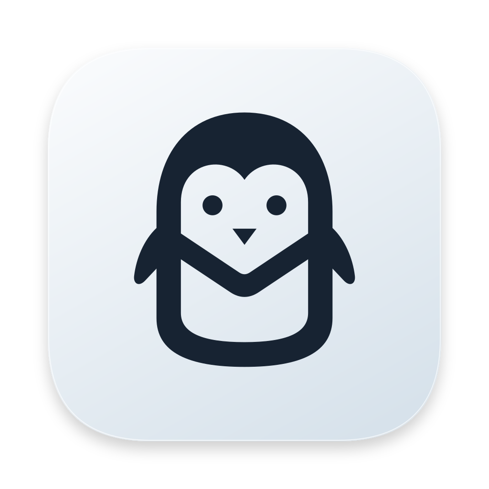

A folded white belly turns the tuxedo into an envelope.
Dark

3216
Light
32
16
Fast mail. A little personality. Six ways to bring the penguin and the envelope together.

A folded white belly turns the tuxedo into an envelope.

32
One-color penguin and envelope, distilled for the menu bar.
All six at 64 px, with the same canvas margin and a soft, continuous-corner tile.